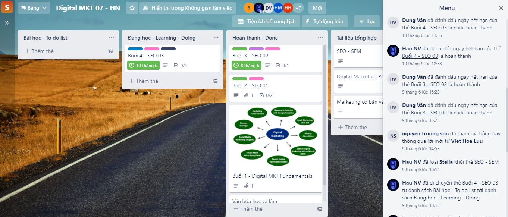
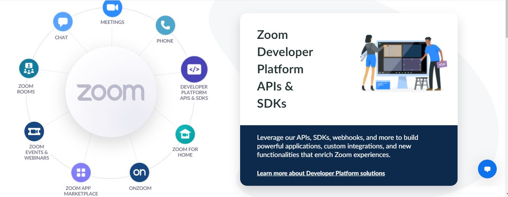
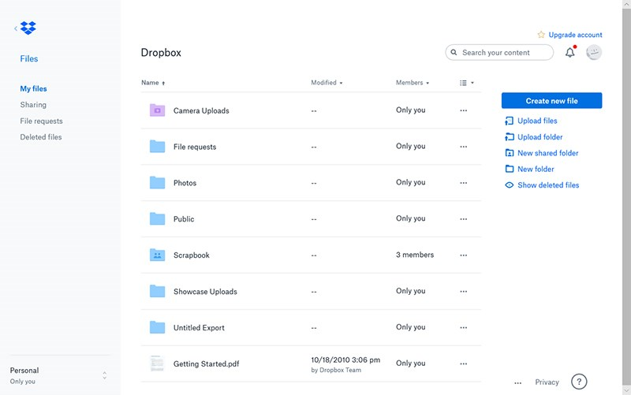
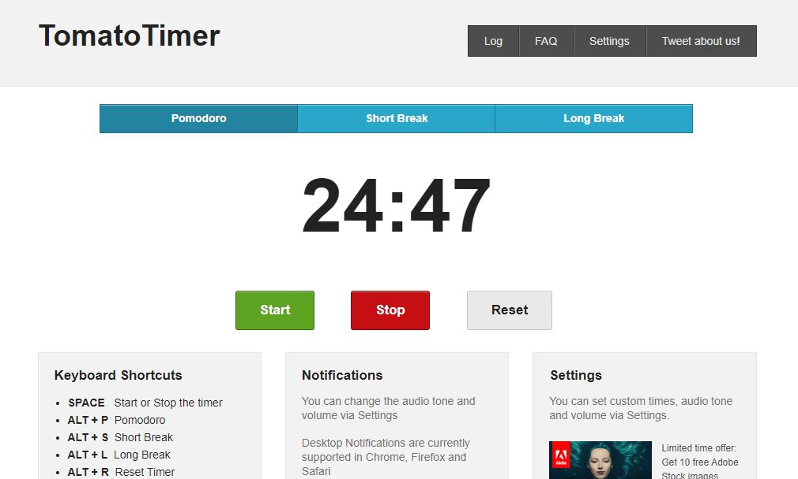
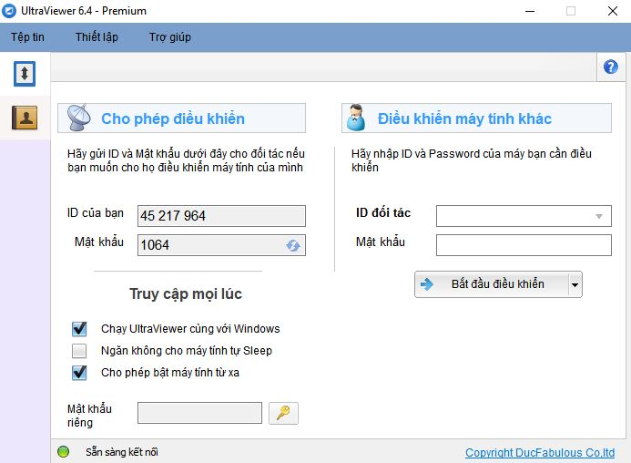

7 phần mềm hỗ trợ làm việc từ xa hiệu quả, không thể thiếu hiện nay
Bạn không thể đến công ty làm việc do ảnh hưởng của đại dịch Covid19? Bạn lo ngại quá trình làm việc sẽ bị ảnh hưởng do thiếu tương tác trực tiếp? Hãy cập nhật ngay 7 phần mềm hỗ trợ làm việc từ xa hiệu quả này nhé
1. Trello
Trello là một công cụ quản lý công việc trực quan, giúp các nhóm cùng nhau lên kế hoạch, ý tưởng, phân công và thực hiện nhiệm vụ một cách khoa hoc nhất. Các thành viên tham gia Trello chỉ cần nhìn qua là nắm được toàn bộ và công việc của mình.

Trong một bảng Trello bao gồm các thành phần sau:
- Bảng: là nơi để sắp xếp các tác vụ, hiển thị toàn bộ các đầu mục công việc từ tổng quát đến chi tiết nhất trong một dự án.
- Danh sách: là nơi lưu trữ các thẻ thông tin được phân loại theo các giai đoạn khác nhau của tiến trình. Ví dụ: Danh sách công việc cần làm - đang làm - đã hoàn thành. Bạn có thể thêm, bớt không giới hạn số lượng danh sách cũng như sắp xếp chúng tùy ý.
- Thẻ: là đơn vị lưu trữ nhỏ nhất trong bảng và thể hiện chi tiết những đầu mục công việc bạn cần thực hiện như viết bài đăng lên website, gọi điện hỗ trợ khách hàng A, thiết kế trang tạp mới… Hoặc đơn giản là lịch nghỉ phép của công ty trong đợt nghỉ lễ. Chỉ cần nhấp vào “Thêm thẻ…” ở cuối danh sách bất kỳ để tạo thẻ mới và đặt tên cho thẻ đó.
- Menu: là trung tâm điều khiển nhiệm vụ dành cho bảng. Bạn có thể theo dõi hoạt động của tất cả các thành viên trong thông báo trên menu. Ngoài ra, bạn quản lý quyền của thành viên đối với bảng, các chế độ cài đặt kiểm soát, thẻ tìm kiếm, bật Power-Up và tạo quy trình tự động hóa.
Một số ưu điểm tuyệt vời của Trello như: dễ dàng sử dụng, theo dõi trực quan, hoàn toàn miễn phí cho tính năng cơ bản…Vì vậy. Trello chính là phần mềm hỗ trợ làm việc từ xa hiệu quả mà bạn nên tham khảo.
2. Zoom Cloud Meeting
Zoom Cloud Meeting là phần mềm họp trực tuyến nổi tiếng và thông dụng nhất hiện nay. Nó được tin dùng bởi nhiều công ty, doanh nghiệp trong các hoạt động đào tạo trực tuyến, tổ chức hội thảo, hội họp từ xa bởi tính chất dễ sử dụng, hoàn toàn miễn phí và đa nền tảng. Bạn chỉ cần có một đường link zoom hoặc một mã Zoom ID là đã có thể tham gia vào phòng họp.

Các tính năng nổi bật của Zoom Cloud Meeting bao gồm:
- Cho phép chia sẻ nội dung màn hình, chia sẻ tài liệu, trình chiếu Powerpoint
- Video Call, chat trực tuyến với chất lượng âm thanh ổn định và hình ảnh HD
- Ghi lại cuộc họp phục vụ cho mục đích lưu trữ thông tin và cho phép những ai không thể tham gia cuộc họp trực tuyến, đều có thể kiểm tra và xem lại trên đó, kể cả người đã tham dự.
- Tạo phiếu thăm dò và thu thập ý kiến của những người tham gia.
- Giao diện đơn giản, hỗ trợ đa nền tảng phù hợp với người làm việc linh hoạt, thường xuyên hội họp
- Dễ dàng tham gia trên nhiều thiết bị di động điện tử như: điện thoại thông minh, máy tính, máy tính bảng
- Cho phép gửi lời mời kết bạn sử dụng Zoom thông qua Email.
- ...
Như vậy, nếu bạn thường xuyên phải tham gia các cuộc họp, hội thảo, đào tạo trực tuyến thì Zoom là phần mềm quản lý, hỗ trợ làm việc từ xa hiệu quả, dễ dàng mà bạn cần lưu ý.
3. Dropbox
Dropbox là một dịch vụ lưu trữ tập tin, hình ảnh, video trực tuyến miễn phí. Bạn có thể sử dụng máy tính, máy tính bảng, điện thoại thông mình để xem, chia sẻ, chỉnh sửa hoặc tải tài liệu về. Đây là một công cụ hỗ trợ làm việc từ xa rất thông dụng và hữu ích

Các tính năng chính của Dropbox:
- Cho phép lưu trữ miễn phí với tối đa 2GB dữ liệu thông tin.
- Có thể tương thích và dễ dàng sử dụng trên các hệ điều hành phổ biến hiện nay như: Android, iOS, Windows, Linux, macOS,…
- Làm việc ngoại tuyến ngay cả khi mất mạng do lỗi đường truyền hoặc đang di chuyển trên đường không có kết nối 3G/4G.
- Dễ dàng khôi phục lại tài liệu nếu lỡ bị xóa mất do tính năng tự động sao lưu
- Đánh dấu tệp tin quan trọng và dễ dàng truy cập nhanh khi cần thiết.
- Thoải mái tạo không gian làm việc nhóm, dễ dàng thảo luận trực tuyến, truyền tải ý tưởng với Dropbox Paper
- Tính năng đồng bộ có chọn lọc cho phép bạn chọn một số thư mục quan trọng để sao lưu với máy tính thay vì chọn toàn bộ.
- ...
4. Evernote
Để làm việc từ xa đạt hiệu quả cao, việc quản lý các đầu mục công việc là vô cùng quan trọng. Evernote là phần mềm hỗ trợ quản lý ghi chú không thể thiếu trên thiết bị của bạn. Với Evernote, bạn có thể liên tục ghi chú, sáng tạo, dễ dàng tìm kiếm thông tin mà không cần phải lo về việc bị sót hay lỡ mất hạng mục quan trọng nào.
Một số tính năng của Evernote:
- Tạo, sắp xếp và quản lý ghi chú một cách khoa học.
- Tính năng tìm kiếm thông minh dựa trên thẻ từ khóa giúp bạn tìm được ghi chú cần thiết, ngay lập tức.
- Tìm kiếm được cả những ghi chú có từ khóa trong hình ảnh, chữ viết tay, danh thiếp hoặc tài liệu… nhờ khả năng nhận diện kí tự đỉnh cao.
- Có thể tương thích và hoạt động trên mọi thiết bị và nhiều hệ điều hành khác nhau như: Windows, Android, IOS, Mac, Linux…
- Tích hợp với nhiều ứng dụng như Google Drive, Slack, Outlook, MS Teams, Zapier và Gmail.
- Đồng bộ hóa ghi chú trên mọi thiết bị để luôn có thể sử dụng ghi chú, ngay cả khi không có mạng.
- Hệ thống bảng và màu sắc giúp việc ghi chú hiệu quả và dễ dàng hơn.
- Sắp xếp những thông tin quan trọng tại cùng một nơi.
Bạn có thể sử dụng Evernote trong nhiều công việc như: lên ý tưởng, phác thảo dự án, ghi chú buổi học/ họp trực tuyến hoặc offline. Hãy trải nghiệm và ứng dụng nó để nâng cao hiệu suất công việc.
5. Tomato Timer
Tomato Timer là một ứng dụng giúp hỗ trợ làm việc từ xa hiệu quả. Với Tomato Timer, bạn sẽ quản lý thời gian một cách khoa học giúp tăng tối đa khả năng tập trung và nâng cao đáng kể năng suất lao động.

Ứng dụng được vận hành dựa trên nguyên lý của phương pháp tập trung Pomodoro. Đầu tiên, bạn liệt kê các công việc, nhiệm vụ quan trọng cần hoàn thành. Sau đó tập trung giải quyết trong thời gian ngắn thường là mỗi 25 phút. Xen kẽ giữa các phiên làm việc này là khoảng nghĩ kéo dài tầm 3 - 5 phút giúp bạn nạp lại năng lượng trong thời gian nghỉ giải lao. Nhờ vậy, cơ thể lại tươi mới và sẵn sàng để bắt đầu các phiên làm việc ngắn tiếp theo hiệu quả và tập trung nhất.
Sở hữu giao diện đơn giản, dễ sử dụng, Tomato Timer gồm những thành phần sau:
- Pomodoro: Khoảng thời gian kéo dài 25 phút
- Short Break: Khoảng nghỉ kéo dài 5 phút sau mỗi Pomodoro
- Long Break: Sau 4 khoảng Pomodoro sẽ là khoảng nghỉ dài 10 phút
3 nút START, STOP, RESET tương ứng với 3 chức năng vận hành của ứng dụng là bắt đầu đếm giờ, tạm dừng, cài lại giờ.
Giờ đây, việc tập trung của bạn sẽ trở nên rất đơn giản và việc hoàn thành công việc cũng dễ dàng hơn bao giờ hết. Hãy rèn luyện và nâng số pomodoro để tăng tối đa khả năng tập trung của mình nhé. Điều này sẽ ảnh hưởng rất nhiều tới hiệu suất công việc của bạn đấy.
6. Slack
Slack là một phần mềm quản lý hoạt động nhóm thông minh và khoa học. Bạn có thể tạo các chủ đề thảo luận riêng, nói chuyện, chia sẻ file tài liệu, hình ảnh,… cho tất cả mọi người trong nhóm một cách nhanh chóng.
Một số tính năng từ ứng dụng chat nhóm Slack:
- Cho phép hoạt động trên hầu hết các hệ điều hành phổ biến như macOS, Windows, Android, iOS,…
- Sử dụng được trên máy tính, máy tính bảng, laptop, điện thoại thông minh. Chỉ cần cài sẵn ứng dụng và có kết nối internet.
- Dung lượng lưu trữ lên đến 5GB, và có thể liên kết được với các ứng dụng lưu trữ khác như Google Drive, Github, Dropbox, Trello, Task Reminder…
- Tìm kiếm người dùng, tin nhắn hay tập tin nhanh chóng theo từ khóa/ ngày giờ/ liên kết đánh dấu...
- Thiết lập nhắc nhở những mục quan trọng và cần nhớ với Slack Bot
- Thay đổi định dạng văn bản giúp tạo điểm nhấn và gây chú ý
- Tổ chức hội họp theo chủ đề, dự án hoặc bất kỳ điều gì khác quan trọng đối với công việc của bạn.
- ...
Hãy bắt đầu trải nghiệm tuyệt vời với ứng dụng chat nhóm Slack giúp quá trình làm việc từ xa trở nên hiệu quả và thú vị hơn nhé.
7. UltraViewer
UltraViewer là một trong những phần mềm điều khiển máy tính từ xa thông dụng nhất hiện nay. Vài năm gần đây, UltraViewer dần trở thành phần mềm thay thế Teamviewer được người dùng ưa chuộng nhờ những ưu điểm vượt trội của nó.

Một số tính năng chính của UltraViewer:
- Hỗ trợ truy cập và điều khiển máy tính từ xa tức thì.
- Kết nối với tốc độ nhanh và ổn định
- Không giới hạn số máy được phép điều khiển trong cùng thời điểm
- Bật máy tính từ xa. Cho phép bạn làm việc bất kỳ nơi đâu chỉ cần có kết nối internet
- Chia sẻ file dễ dàng, an toàn, có kiểm soát. Dung lượng file lớn tùy phiên bản.
- Chia sẻ âm thanh và hình ảnh sắc nét, chân thực - Hỗ trợ độ phân giải 4K Ultra HD
- Ghi hình phiên điều khiển để theo dõi lại
- Tính năng chat thông minh, chuyên nghiệp. Giao diên thân thiện, dễ dùng
- Hỗ trợ mọi hệ điều hành Windows
- Tính bảo mật cao giúp quá trình điều khiển diễn ra an toàn, minh bạch.
- Tạo phiên bản gắn logo riêng giúp tăng nhận diện thương hiệu doanh nghiệp.
- - ...
UltraViewer là phần mềm hỗ trợ làm việc từ xa hiệu quả, không thể thiếu đối với hầu hết người dùng làm việc máy tính hiện nay. Bạn có thể tải Ultraviewer để sử dụng hoàn toàn miễn phí.
Kết hợp thông minh và linh hoạt các phần mềm trên đây sẽ giúp hoạt động làm việc từ xa trở nên dễ dàng và thú vị hơn bao giờ hết. Chúc các bạn sẽ tìm được công cụ phù hợp và tốt nhất cho riêng mình.


Viết bình luận (Cancel Reply)